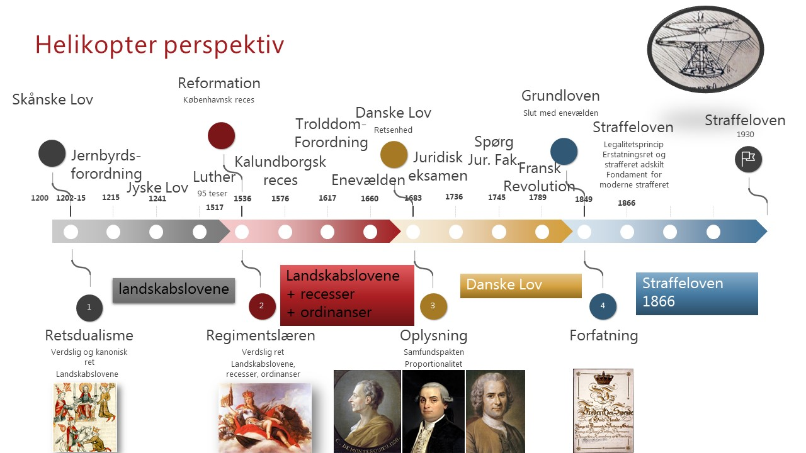

Skånske Lov (1202–1216)
Provinslov—se artikel på Wikipedia (da).
Jernbyrd / Jernbyrdsforordning
Ritualer for bevisførelse i middelalderen. Læs mere (da).
Jyske Lov (1241)
En af de store landskabslove. Læs på Wikipedia (da).
Martin Luther — 95 teser (1517)
Luthers indflydelse og reformationen (da).
Reformation / Københavnsk reces (1536)
Implementering af reformationen i Danmark 1536.
Kalundborgsk reces (1576)
Reces/forhandling — Wikipedia (da).
Trolddomsforordning (1617)
Lovgivning om trolddom/hekseforfølgelser (da).
Danske Lov (1683) / Enevælde
Kodificering af dansk lov; centralisering under enevælden.
Juridisk uddannelse / eksamen
Historisk udvikling af juridisk uddannelse.
Fransk revolution (1789)
Revolutionens idéer og påvirkning af dansk ret.
Grundloven (1849)
Den første demokratiske forfatning i Danmark (1849).
Straffeloven af 1866
Den borgerlige straffelov fra 1866 (afløst 1933/1930-lov).
Straffeloven (1930/1933)
Den nugældende danske straffelov indført 1930 (i kraft 1933).
Samfundspagt (samfundspagten)
Begreb: social kontrakt — lex.dk.
Proportionalitet
Proportionalitetsprincip for ret og strafferetspleje (lex.dk).
Montesquieu
Klik for biografi (da.wikipedia).
Cesare Beccaria
Klik for biografi (da.wikipedia).
Jean-Jacques Rousseau
Klik for biografi (da.wikipedia).